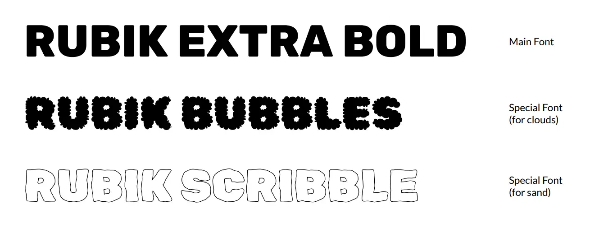
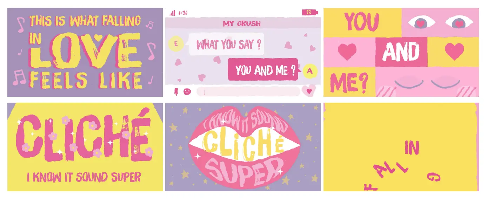
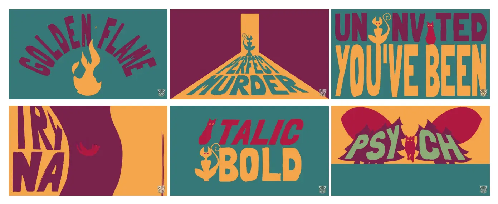
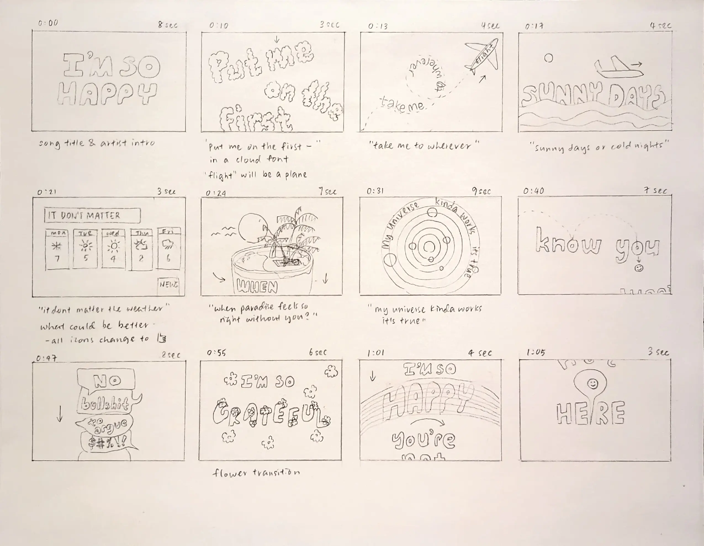
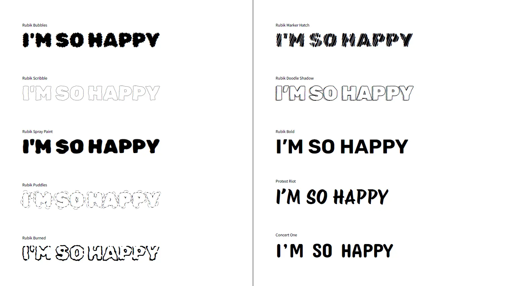
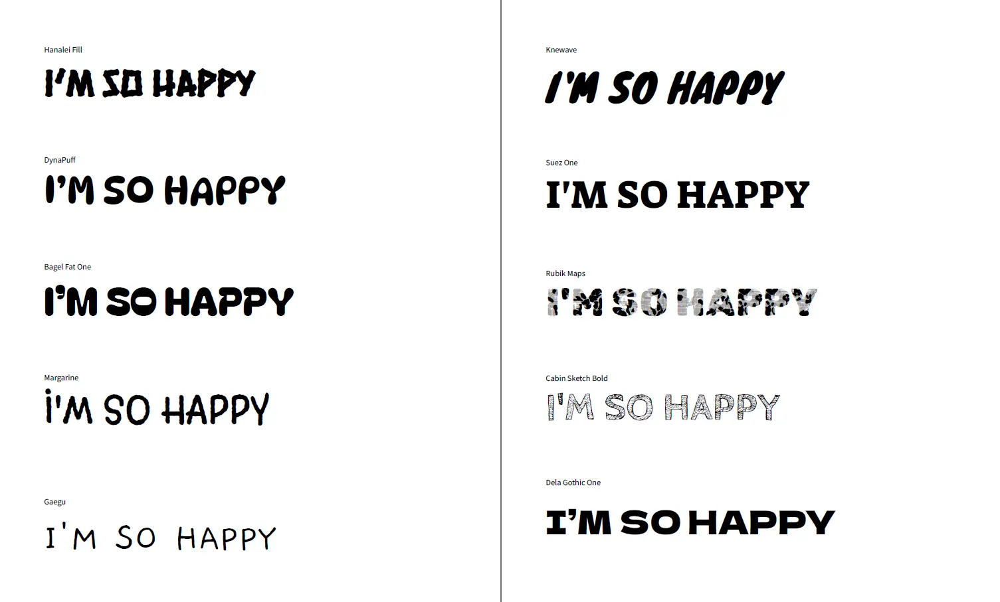
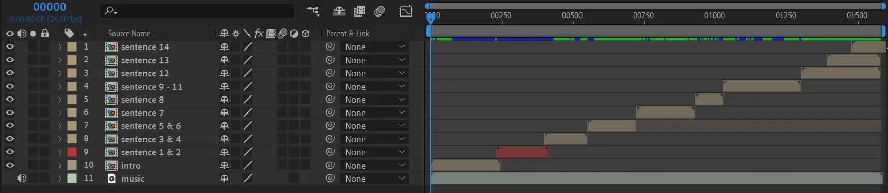
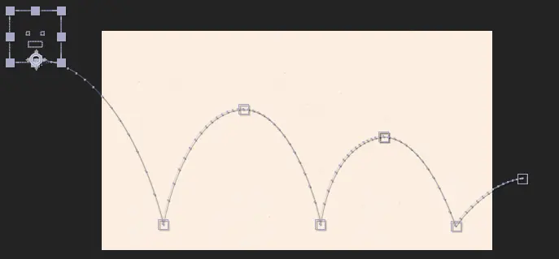
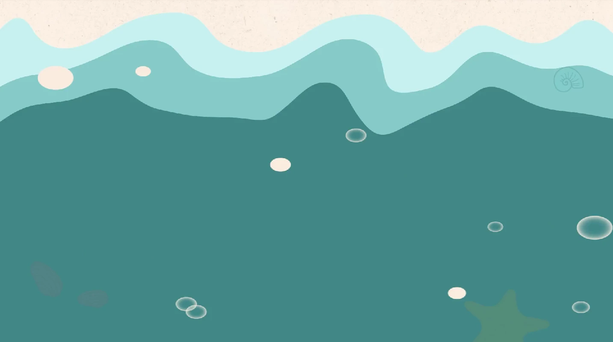
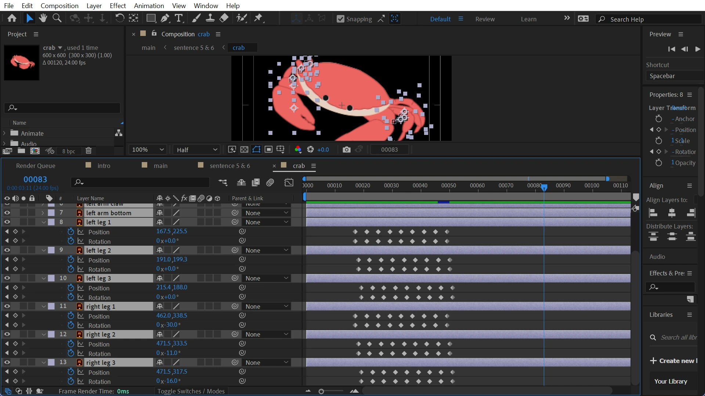

March 2024 (4 weeks)
Motion Designer
After Effects, Illustrator
MP4 video
Create a visually engaging text animation that reflects the rhythm and tone of a song or dialogue. For this, I animated a section of the lyrics from Jeremy Zucker's song I'm So Happy.
Final animated video
I created a custom color palette that consists of colors that could evoke feelings of joy and calmness. To ensure cohesiveness, the video incorporates only the chosen colors along with their shades and tints.
I chose Rubik as the primary font for its rounded corners, which convey a sense of friendliness and fun. Additionally, Rubik Bubbles and Rubik Scribble were used to mimic the appearance of clouds and writing in the sand.
Custom color palette that could evoke feelings of joy and calmness
Rubik typefaces used in the video
My animation process is divided into two phases: planning and animating. In the planning phase, I conducted research, developed a storyboard, and established the art direction. In the animating phase, I created graphic assets and animated the text sentence by sentence.
While brainstorming scenes, I explored projects on Youtube for inspiration. Here are two examples that inspired the overall vibe of my project.
Kinetic Typography Lyrics Video by Duongrafik ↗
Animated Lyrics by Maginpanic ↗
I created a rough storyboard as reference for designing each scene. Sketching on paper helped me visualize concepts and quickly experiment with ideas.
Storyboard
I created a google doc to experiment with various typefaces.
Experimenting with different typefaces
I animated the video sentence by sentence, with each composition containing one or two sentences. All compositions were then compiled into a single main composition. The following image shows my main composition arrangement.
Main composition in After Effects
In this project, I applied animation principles and camera transitions to enhance movement and fluidity.
To create the illusion of weight, I used the “squash and stretch” principle on the bouncing smiley face by adjusting its scale. I also applied the "arcs" principle to ensure a smooth, natural bounce by refining the position keyframes and incorporating ease-ins and ease-outs. Additionally, I fine-tuned the motion by adjusting individual keyframes in the graph editor for a more polished flow.
Squash and stretch principle
Arcs principle
I incorporated camera movements to create seamless transitions. For example, in this scene I used a combination of dolly out, pan, and truck. This was achieved by utilizing 3D layers, a null object, and adjusting the camera’s depth of field and aperture.
Transition using camera movements
One of the main challenges I faced was determining how to transition smoothly between scenes. For instance, I struggled to find a fitting transition between these two scenes.
Lost in transition
Drafting on paper helped me develop the idea of a wave sweeping up as a transition.
Another challenge was ensuring the elements moved as intended while keeping timing in mind. For example, animating the walking crab involved rotating and positioning each leg individually, and the movement needed to be large enough to be visible, given the small size of the legs on screen.
Controlling the keyframes for animating crab legs
Despite these challenges, this project strengthened my understanding of animation principles. I gained hands-on experience using After Effects, particularly in working with 3D layers, camera movements, and keyframe adjustments. Moving forward, I plan to explore more complex animations and transitions, further refining both my technical and conceptual skills.